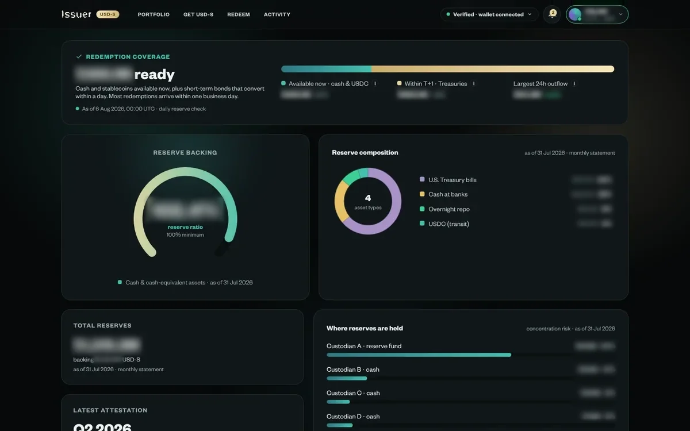
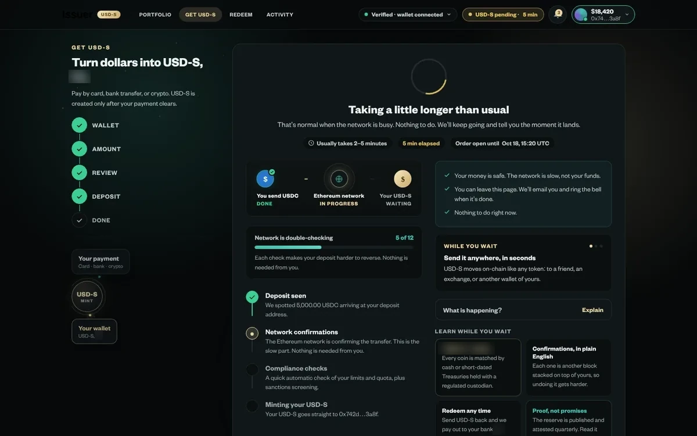
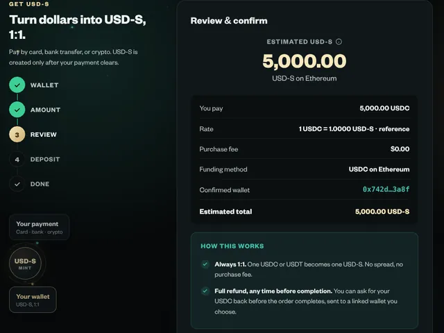
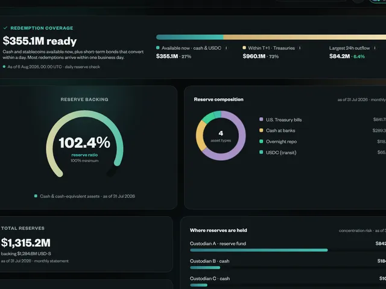
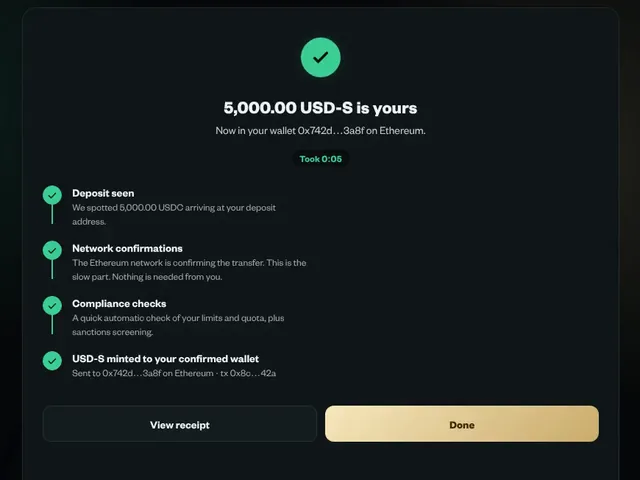
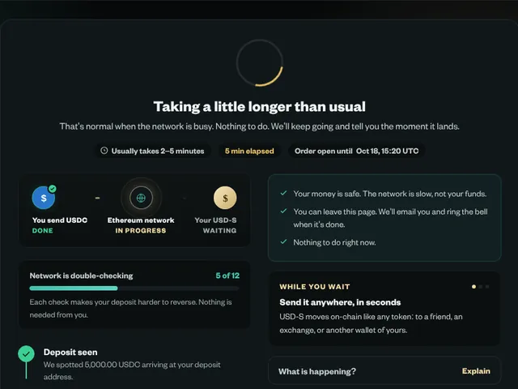
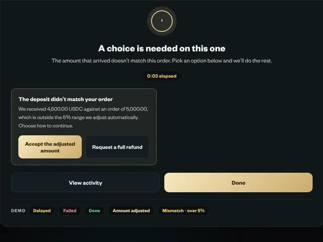
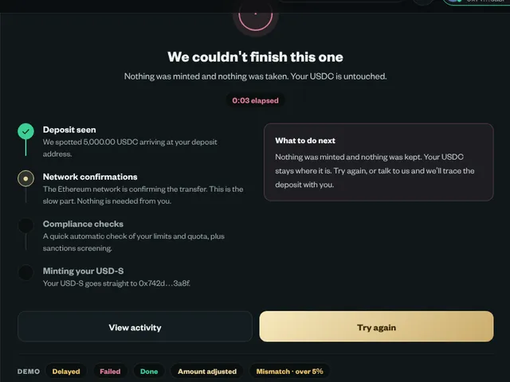

Unera · 2026 – now · 8 min read
A stablecoin portal that shows its proof before it asks for your money.
Why this case is here: Trust design and motion: proof-of-reserve, issue and redeem, copy that shows evidence first.
Web app in build.
Seven scenes follow, then the full written case. Every number carries a stamp that says how I know it.
- Lead Product Designer (contract)
- Product owner, QA and spec owner, back-end and front-end engineers, 1 part-time junior designer
- Web app in build
- Unprovable claims removed from screen3Record
- Hands-on time to buy with USDC~20.5 sModelled
The problem
Trust you can’t check isn’t trust.
Early designs leaned on “fully backed” and “instant redemption”. A back-end engineer pointed out that one reserve asset is not strictly one to one. That comment changed the brief.
Before
- “Fully backed” status
- “Instant redemption”
- “1:1 USD-backed” chip
After
- Reserve ratio, with its date
- “~1 business day”
- Removed
The reframe
Four jobs, not nine.
Buy, hold, redeem and prove. Earn, Bridge, Rewards, a business console and crypto payouts were cut from the first release. A money product people don’t yet trust shouldn’t widen the ways they can lose money.
- 9 → 4
- jobs in release one
- RecordScope audit, June 2026
- 3
- claims taken off the screen
- RecordCould not be shown as evidence
- 259 + 95
- functional and responsive test cases written with the design
- RecordSo QA tests intent
The design
Every reserve number shows its age and its source.
A reserve number without a date is a number from an unknown time. Quarterly attestations come with a hash you can check. Proof never reads as profit: evidence in calm teal, the accent kept for actions.

The money, as a place
Three ways in, one coin.
A bank deposit, USDC or USDT goes in. USD-S is created only after the payment clears.
Four places it goes.
To your wallet, to everyday spending, back to a bank, or to community centres funded by what the reserve earns.
The proof stacks up beside it, dated.
Each attestation is dated and hashed, so the proof is something you can check, not a badge. The moving lights are an illustration, not data.
- Three ways in, one coin. A bank deposit, USDC or USDT goes in. USD-S is created only after the payment clears.
- Four places it goes. To your wallet, to everyday spending, back to a bank, or to community centres funded by what the reserve earns.
- The proof stacks up beside it, dated. Each attestation is dated and hashed, so the proof is something you can check, not a badge. The moving lights are an illustration, not data.
The motion
Every moving piece shows money going somewhere.
The client asked for a public page with more life in it. I recorded a product they admired, found five gaps in our first build and fixed them. Nothing moves off screen, and reduced motion gets still frames.
The slow paths
Delay has a state. It is not left to an error toast.
Quotes hold for 60 seconds, with a countdown. The review says how far the final amount may move. The tracker shares its pattern with the wallet and announces its headline to screen readers.

Leading the work
An engineer’s objection became the most useful input of the project.
- Treated the one-to-one challenge as a design input, so engineers raise more problems early.
- Split the work by lane: I own the flows, the proof and the rules; a junior designer owns the delayed, short and failed cases inside them.
- Wrote 259 functional and 95 responsive test cases next to the screens.
- Had a review call transcribed and traced every item, and found changes we had dropped.
Read the full case
In one line: Unera issues hUSD, a US-dollar stablecoin. People buy it, hold it and redeem it through a web portal I designed. The hard part wasn't the flows. It was making a money product believable without saying anything it couldn't prove.
| Role | Lead Product Designer (contract). I own the portal's design and its design system, and I lead a part-time junior designer who designs its error and edge states. |
| Team | Product owner, back-end and front-end engineers, QA and spec owner, 1 part-time junior designer |
| Platform | Web app, desktop and mobile |
| Status | Designed and handed to engineering. Not launched, so no live usage data yet. |
Thirty-second version
- Problem. A stablecoin is only worth what people believe backs it. Early designs leaned on claims such as "fully backed" and "instant redemption". Some were not strictly true, and none could be checked on screen.
- What I did. Cut the first release down to buy, hold, redeem and prove. Removed every claim the product couldn't back. Rebuilt Proof of Reserve so each number shows how fresh it is and where it came from. Split the work so I own the flows and rules and the junior designer owns the slow, failed and mismatched cases inside them.
- Where it stands. About 12 screens, 19 components and about 124 tokens, with 259 functional and 95 responsive test cases written next to the design. Those are counts of work, not results. Before launch I set pass bars, modelled the main task at about 20 seconds of hands-on time, and wrote a five-person test to replace the model.
How the work ran
| Step | What happened |
|---|---|
| Discover | Audit of the existing scope and copy, June 2026. Found five features beyond what a first release needed and three trust claims that couldn't be shown on screen. |
| Reframe | From "promise safety" to "show evidence a person can check". Triggered by an engineer's comment that one reserve asset is not strictly one to one. |
| Quality bar | Test cases written with the design (259 functional, 95 responsive) so QA tests intent, not guesses. Every claim on screen must have its evidence on the same screen. |
| Design | Buy, hold, redeem and Proof of Reserve flows; quote expiry, estimate vs actual, delayed, failed and mismatched deposits. Public home page and motion layer added 8 September. |
| Validate | Feedback call 24 July (product owner, back-end); Proof of Reserve review 6 August; full audit 13 September, which fixed ARIA labels, Escape-key handling and contrast. One item is still open: modals don't trap keyboard focus yet. Spoken feedback re-transcribed so nothing was dropped. |
| Ship or measure | Front-end building from the prototype. Five-person test written. Not launched, and no launch date is public. |
Trust you can't check isn't trust.
Most stablecoin sites open with a promise: fully backed, one to one, redeem instantly. People have heard that before, sometimes just before a coin collapsed.
In our first review, a back-end engineer pointed out that one of the reserve assets, USDC, is not strictly one to one. That one comment changed the brief. If a single badge on the screen could be argued with, the whole page was weaker for it.
The design question became: how do we earn belief with evidence a person can check, and never with a claim?
Three claims came off the screen because we couldn't prove them.
I went through the portal line by line with one test: could we show the evidence, right here, today?
| Before | After | Why |
|---|---|---|
| "Fully backed" status | Reserve ratio with its date | A ratio can be checked. A status can't. |
| "Instant redemption" | "~1 business day" | Some reserves take a day to turn into cash. |
| "1:1 USD-backed" chip | Removed | Not strictly true for every reserve asset. |
The brand rule that came out of this: proof never reads as profit. Reserve numbers use a calm teal. The yellow accent is kept for actions, so evidence never looks like an advert.
Every reserve number shows its age and its source.
A reserve number without a date is a number from an unknown time. So every block on the Proof of Reserve page shows when it was measured and where it came from. Quarterly attestations come with a hash you can check, and a short docs page explains how.
The first release does four jobs, not nine.
The early scope had Earn, Bridge, Rewards, a business console and crypto payouts. I cut all of them from the first release. A money product people don't yet trust shouldn't be widening the ways they can lose money.
The motion shows money moving, and stops when you look away.
In September the client asked for a public home page with the energy of a product they admired, only softer. I recorded that product, compared it with our first build and found five gaps: the hero arrived as one block, the globe looked flat, the flow diagram was too sparse, the charts had no live value on them, and whole sections appeared at once. I fixed all five.
The rules I kept to: every moving piece shows money going somewhere, the easing is slow, and nothing moves off screen. People who ask their device for reduced motion get still frames.
The same rules run through the other public pages, the ones a visitor sees before signing up.
The slow paths are designed, not left to an error toast.
- Quotes expire. A purchase quote holds for 60 seconds, and the screen shows the countdown. People can type the amount on either side of the trade.
- Estimate vs actual. The review shows an estimated amount and says the final amount may move within a stated limit. After back-end input, we added a clear choice for when the deposit doesn't match the order.
- Delays have a state. The purchase tracker shares its pattern with the wallet. It has a live headline that screen readers announce, and a designed Delayed state.
I own the flows and the rules. The junior designer owns the bad days inside them.
A portal like this has one happy path and a long tail of cases: slow networks, short deposits, failed checks. As the work grew, I split it into two lanes so it could run in parallel without two designers inventing two styles.
My lane The flow, the proof, the rules

Review: estimate, fee and refund terms before you pay
Proof of Reserve: every block dated
The tracker pattern and its stage names
I hand over the flow, the spec's list of failure cases and the written state rules. Every state comes back to me for review before engineering sees it.
Junior designer's lane The bad days, inside those rules

Delayed: "That's normal when the network is busy."
Short deposit: two clear choices, no dead end
Failed: "Nothing was minted and nothing was taken."
The rules both lanes work to are written down, in the design manual and in the tracker spec the portal shares with the wallet, so a review checks the rule and not my taste:
- Every failure case the spec names gets its own state, marked as blocking or not. A blocking state disables the main button.
- Failure, waiting and success are different components. A failed purchase never borrows the success badge.
- Every sentence says what happened to the money and whether the person needs to do anything.
Before launch: a bar, a model, and the test that replaces the model.
Nothing is live, so there are no results to show. What I can do before launch is set the bar, model the main task, and write the test that will replace the model with real data.
| Measure | Bar | Receipt |
|---|---|---|
| Hands-on time to buy USD-S with USDC, up to "I've sent it" | About 20.5 s: 7 clicks, 4 keystrokes | Modelled |
| Hands-on time from seeing the quote to confirming it | About 5.3 s of the 60-second quote | Modelled |
| Testers who confirm before the quote expires, without rushing | 4 of 5 | Target |
| Testers who can say what backs USD-S after one visit to Proof of Reserve | 4 of 5 | Target |
| Testers who pick the option they meant on a short deposit | 4 of 5 | Target |
| System Usability Scale across the session | 70 or higher | Target |
Read these carefully. The model is a keystroke-level model with standard times: 1.1 s to point, 0.2 s to click, 0.28 s per keystroke, 0.4 s to move a hand between mouse and keyboard, and 1.35 s to decide before each step. It leaves out reading, network waits and the wallet app, so real times will be longer. I use it to compare designs and to check the quote window, not to predict a result. The targets are mine and still need the product owner's agreement.
The five-person test script
| Who | Five people who hold some crypto but have never bought a stablecoin from an issuer |
| Setup | Moderated, 40 minutes, prototype with a test wallet. Think aloud. |
| Task 1 | Buy 500 USD-S with USDC. Measure: finished unaided, quote expiries, time on task. |
| Task 2 | Find out what backs USD-S, then tell me in your own words. Measure: answer checked against the Proof of Reserve page. |
| Task 3 | Your deposit arrives short (we trigger it). Decide what to do. Measure: did they pick the option they meant? |
| Task 4 | Redeem 100 USD-S to your bank. Measure: do they know when the money arrives? |
| After | SUS questionnaire, then "What would stop you buying more?" |
| If a bar is missed | Change the design, then retest with five new people. The model is replaced by these results. |
Decision log
| Decision | Options | What I chose and why |
|---|---|---|
| Trust claims | Keep the marketing badges / show dated evidence | Dated evidence. An engineer's challenge showed one badge wasn't strictly true. |
| Release 1 scope | Full feature set / buy, hold, redeem, prove | Four jobs. Earn trust before adding ways to move money. |
| Deposit address | New address per request, expiring / one permanent address | Permanent. The first design gave a new address for every request, and each one expired after 60 minutes. |
| Saved cards | Card vault / guest checkout | Guest checkout. Back-end constraint; it also stores less sensitive data. |
| Where to choose the funding method | On the amount step / on the payment step | Amount step. I moved it to the payment step after the 24 July feedback call, then moved it back. The final flow asks for the method before the currency. |
| Header size | Large balance hero / compact header | Compact. Cutting the header from 5rem to 2.5rem kept the main actions above the fold on phones. |
| Who designs the failure states | Me, after the flows / a second designer, in parallel, to written rules | In parallel. The happy path and its failures were designed at the same time, and the rules kept them in one voice. |
How I led
- Grew a UI brief into a design practice. I was hired as a UI/UX designer for the interface and later promoted to lead. The scope audit and the evidence rule on this portal were two of the steps that turned it into product design work. The Huma case has the dated timeline.
- Treated an engineer's objection as a design input. The USDC comment was the most useful feedback of the project. Engineers raise more problems early when they see their last one change the product.
- Split the work by lane, not by screen. I kept the flows, the proof and the rules. The junior designer took the failure states, and I reviewed each one against the written rules before hand-off.
- Wrote the tests with the design. 259 test cases and 95 responsive test cases sit next to the screens, so QA tests what I intended and not what they guess.
- Caught what we missed. Some spoken feedback from a review call didn't make it into the notes. I had the recording transcribed and traced every item, and found changes we had dropped.
What I'll measure when it's live
| Measure | How |
|---|---|
| Purchases completed after a quote is shown | Funnel analytics; quote expiries counted separately |
| Proof of Reserve page visits before a first purchase | Analytics path analysis |
| Redemptions that end in a support ticket | Ops data per 100 redemptions |
| Short or mismatched deposits, and which option people pick | Back-end events, weekly |
| How often the reserve data is refreshed and verified | The client's own trust measure; each block's "as of" date shows it |
What I'd do differently
The funding-method step moved twice: forward after one review, then back after another. Both moves had reasons, but I made the first change on one person's comment without testing it. I'd now prototype both orders and put them in front of five people before changing a flow that engineering has already built.
The design docs also drifted from the tokens. The colour changed from teal-navy to near-black, but parts of the readme still say the old name. I now update the docs in the same change as the tokens, or the change isn't done.
Prototype screens and recordings with placeholder figures. Custodian, partner and reference-product names are removed. Unera and hUSD are named with the client's written approval.